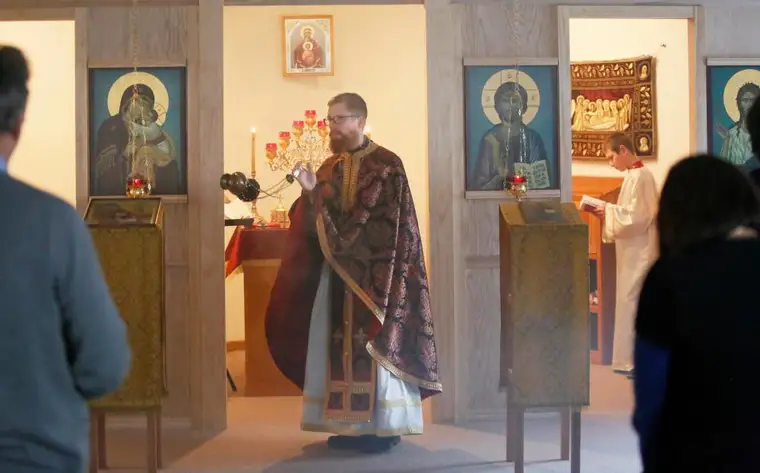

David Samson / The Forum
FARGO — At a Wednesday evening vesperal Presanctified Liturgy at Holy Resurrection Orthodox Church, the only light emanates from windows holding the last spark of day and the flickering of candles.
Incense permeates the sanctuary, where the Reverend William Rettig processes with a vessel through which smoke rises like prayers.
A sense of holy, and of waiting, has settled into the Lenten ceremony of this small but committed congregation.
“Lent is a time when we try to change our hearts if we can,” says parishioner Ina Cernusca. “They say Lent is a ‘bright sadness,’ but … you’re not overcome by the sadness. It’s a joy and a hope you always keep in front of you, in your heart.”
Though Cernusca, originally from Romania, grew up in this tradition, fellow parishioner Erik Hjelle was drawn into the liturgical depth of the Orthodox church from Lutheranism. “That historical connection was always in the back of my mind,” he says.
Hjelle also appreciates the focus on Christ, meditating on the beatitudes and singing the psalms, noting that the Lenten season is particularly meaningful.
Even before it starts, the preparation of the heart begins with a service at which congregants ask one another for forgiveness, saying, “God forgives and I forgive,” to one another.
“The emotion of it is strong,” Hjelle says. “If you’re saying that and meaning it … that’s a really powerful moment.”
To further prepare for Easter, or “Pascha,” the Greek word for Passover, parishioners commit to a sacrificial way of living for 40 days, denying themselves certain foods and giving to the poor.
Rettig says it’s basically a vegan diet of no meat, wine or olive oil, with a slight relaxation of that on the weekends, when the Eucharist is celebrated.
“These are always optional of course. People enter into it to the degree they wish,” Rettig notes. “Breastfeeding mothers, pregnant women and the infirmed don’t usually fast; that’s not their spiritual discipline.”

Demetra Western and Luke Semerikov, 6, follow the Lenten worship service at Holy Resurrection Orthodox Church in south Fargo.
Like Hjelle, Rettig wasn’t born Orthodox; he came from a Baptist tradition and was raised by faithful, musical parents, who always encouraged him to seek truth.
In college in Saint Paul, he says, he studied theology, philosophy and Greek, though thinking he may never use them in a practical sense.
His interest in the Orthodox tradition came when several mentors pressed him into answering questions they, too, were having about faith. Rettig says his search led him to an Orthodox community where he felt at home.
He and his now-wife, Jillian, were received into the church in 2007, and soon Rettig was tapped to consider the seminary. After completing his studies at Saint Vladimir’s theological seminary in New York City this past summer, he was placed in Fargo, where the community had been waiting more than a year for a new priest.
Though raised in Washington state, Rettig says, his mother was delighted to learn he’d be in Fargo, since her grandparents are buried in the cemetery on 52nd Avenue South, just across from his parish. “Life really does come full circle at times,” he says.
His new daughter Adelheid, born in October, is a Fargo native.
Cernusca says it’s an especially joyful year for the congregation, with their new priest in place to guide them through the liturgical year, especially as Holy Week approaches, and to celebrate the event for which their parish is named — the Resurrection of Christ.
“After this time of waiting, it’s very special to experience all these firsts together,” she says. “We have had to be patient, but it’s worth it.”
[For the sake of having a repository for my newspaper columns and articles, I reprint them here, with permission, a week after their run date. The preceding ran in The Forum newspaper on March 25, 2017.]